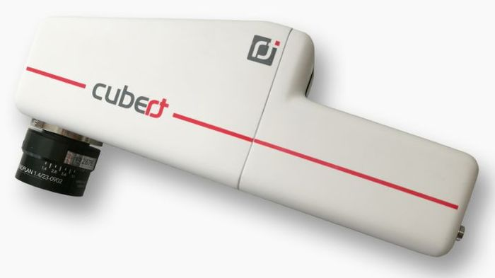
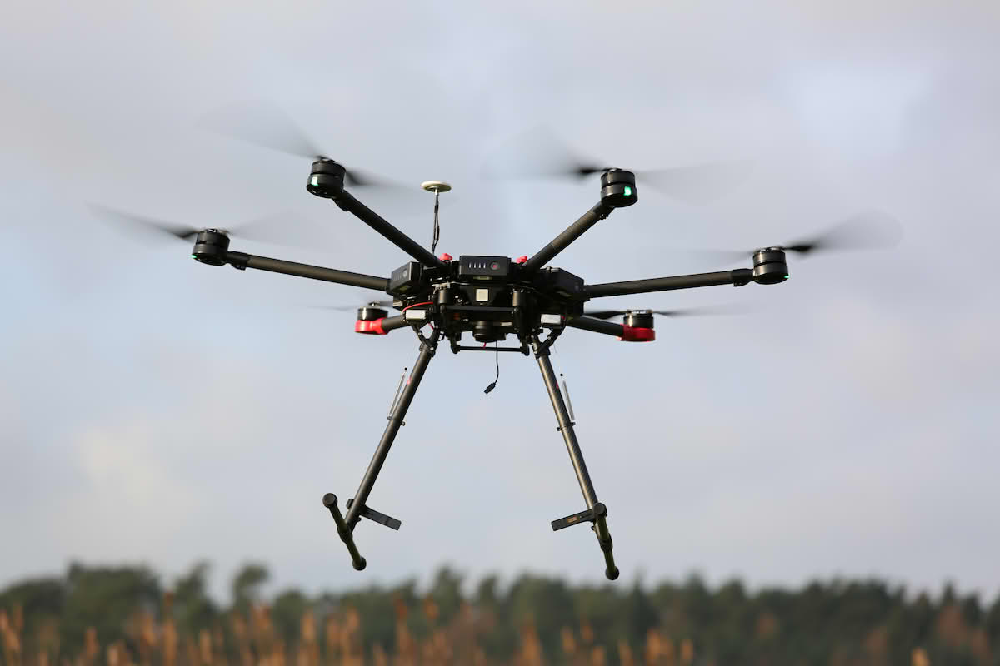
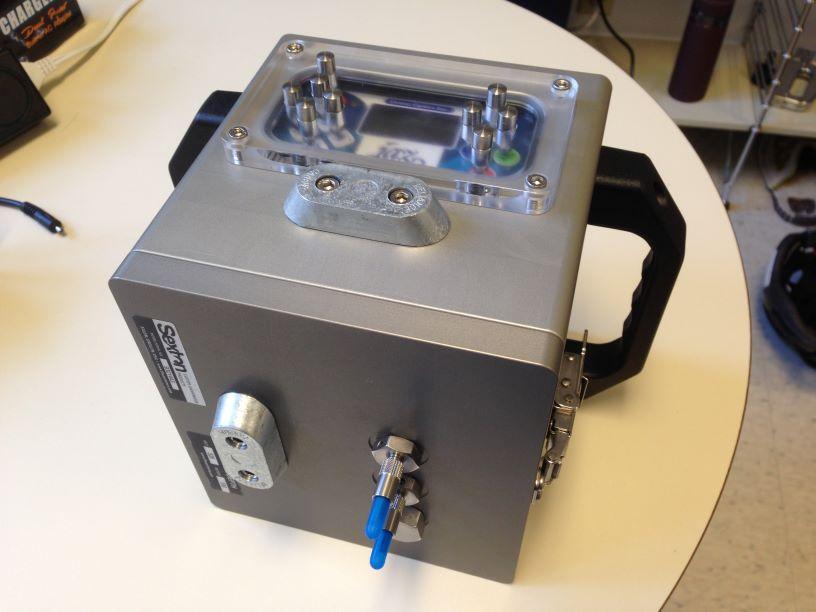
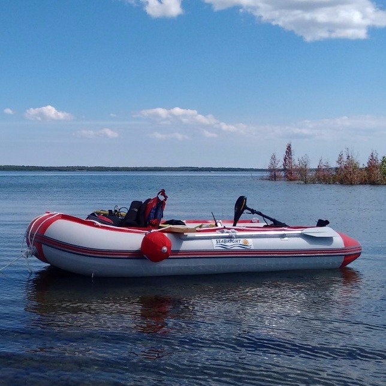

Instruments and field equipment used for radiometry, imaging, and supporting measurements
in our shallow-water research.

Cubert S185 SE FireFleye hyperspectral camera
A snapshot hyperspectral sensor used to collect high-resolution spectral data over
shallow-water and coastal environments. The camera supports calibration and validation
of satellite-derived products for bathymetry, habitat mapping, and water quality.

DJI Matrice 600 Pro
A heavy-lift UAV platform used to carry the hyperspectral camera and other payloads.
The Matrice 600 Pro enables flexible, repeatable acquisitions over study sites to
support algorithm development and validation.

Ocean Optics dual-channel spectrometer
A dual-channel spectrometer used for in situ radiometric measurements, including
water-leaving radiance and downwelling irradiance. These data support the calibration
and validation of satellite and airborne observations.

Inflatable boat
A stable inflatable boat used for field campaigns in shallow and nearshore waters.
The boat provides a platform for deploying radiometric instruments, conducting
water-quality sampling, and supporting ground-truth surveys for satellite missions.